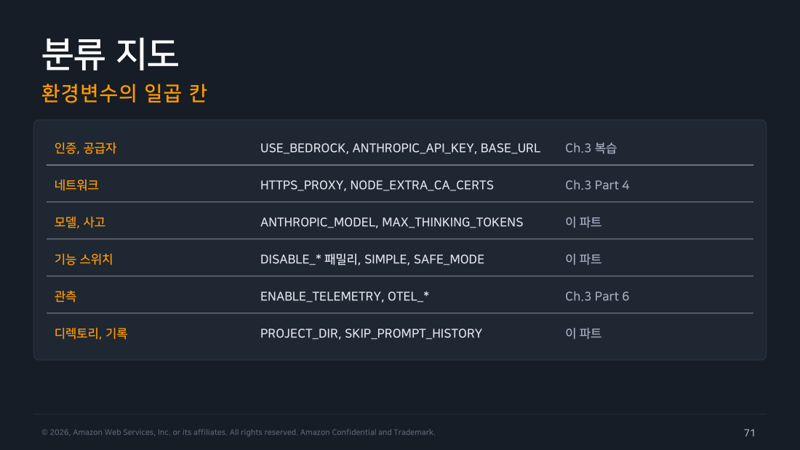
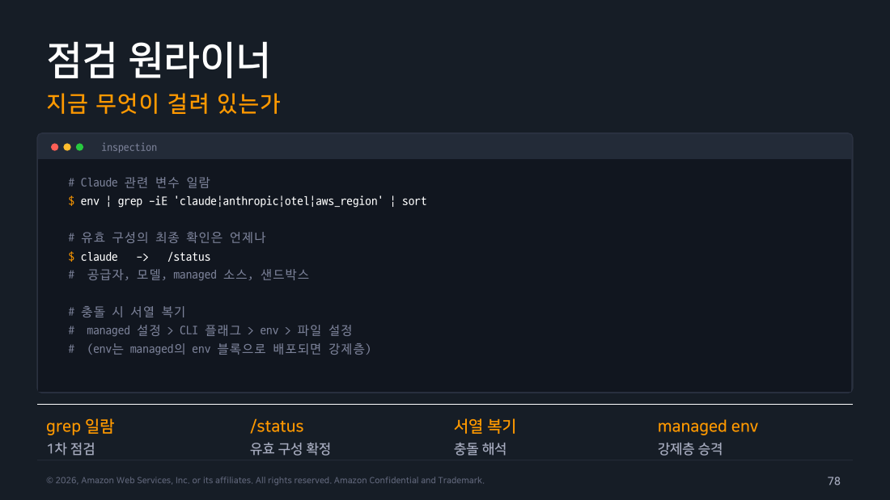
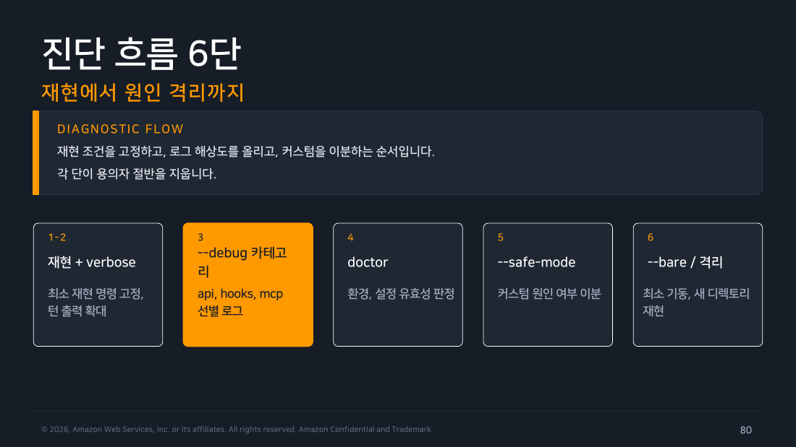

Part 7 — 환경변수와 디버깅¶
한 줄 요약¶
문제 해결은 환경변수를 더 넣는 일이 아니라 기본 실행과 사용자 정의 실행을 이분해 차이를 좁히는 일입니다.
왜 알아야 하나¶
로컬에서는 되고 CI에서는 안 되는 오류는 모델 오류처럼 보이지만 인증·경로·프록시·설정 출처의 차이인 경우가 많습니다. 진단 명령을 먼저 바꾸기보다 재현 가능한 비교선을 만듭니다.
1. 환경변수는 일곱 칸으로 분류한다¶
상황 하나를 놓고 시작하겠습니다. 내 노트북 터미널에서는 claude -p 'say OK'가 잘 돌아갑니다. 똑같은 한 줄을 CI 잡에 그대로 옮겨 넣으면 실패합니다. 남는 건 짧은 에러 메시지 하나뿐이라 처음에는 모델이 이상해진 것처럼 보입니다.
이럴 때 손이 먼저 가는 건 환경변수를 하나 더 넣어 보는 것입니다. 순서가 반대입니다. 물어야 할 건 내 노트북과 CI가 무엇이 다른가이고, 그 차이는 거의 항상 환경변수 몇 개 안에 들어 있습니다. 그래서 진단은 "무엇을 더 넣을까"가 아니라 "어느 종류가 다른가"를 위에서부터 훑는 일이 됩니다.
첫 번째 질문은 인증입니다. 내 노트북은 브라우저로 로그인해 둔 세션을 쓰지만 CI에는 그런 세션이 없습니다. 그래서 CI에는 자격증명을 명시적으로 넘겨야 하고 그 자리를 차지하는 이름이 ANTHROPIC_API_KEY와 ANTHROPIC_AUTH_TOKEN입니다. 교재의 분류 지도는 이 묶음을 인증 칸이라고 부릅니다. 로컬에서만 되는 증상의 절반 이상은 여기서 끝납니다.
인증이 멀쩡한데도 실패하면 다음은 "요청이 어디로 나가는가"입니다. 내 노트북은 기본 엔드포인트로 나가는데, CI 이미지에는 사내 게이트웨이나 Bedrock으로 나가도록 값이 미리 박혀 있을 수 있습니다. 목적지 주소는 ANTHROPIC_BASE_URL이 정하고 어느 공급자의 어떤 모델을 쓸지는 ANTHROPIC_MODEL과 Bedrock·Vertex·Foundry 계열 스위치가 정합니다. 이게 모델·공급자 칸입니다.
목적지도 맞는데 안 되면 그 목적지에 실제로 닿는지를 봅니다. 사내 빌드 러너는 프록시를 거치고 사설 인증서를 신뢰해야 하는 경우가 많습니다. 여기가 네트워크 칸이고 폐쇄망 환경에서는 사실상 1순위 용의자입니다.
여기까지가 "로컬에서는 되는데" 유형의 대부분입니다. 나머지 네 칸은 원인이라기보다 실행의 성격을 바꾸는 쪽입니다. 캐시와 설정이 어디에 놓이는지를 정하는 저장 위치, 켜고 끄는 스위치들이 모인 동작 제어, 로그를 얼마나 남길지 정하는 관측·디버그, 그리고 관리자가 위에서 못박는 조직 정책입니다. 앞의 인증·모델·공급자·네트워크까지 합쳐 일곱 칸이 됩니다. 지금까지 든 이름 외에 실제로 존재를 확인한 것으로는 DISABLE_TELEMETRY, CLAUDE_CODE_DISABLE_NONESSENTIAL_TRAFFIC가 있습니다.
한 가지 구분해 둘 것이 있습니다. 공식 환경변수 reference 자체는 이런 일곱 칸 없이 알파벳순 표 하나로 되어 있습니다. 즉 이 분류는 공식 문서의 구조가 아니라 교재가 학습용으로 얹은 틀입니다. 외울 목록이 아니라 진단할 때 훑는 순서로 쓰면 됩니다. Ch3·Ch4에서 다룬 설정 키와 중복되는 변수는 여기서 전수 설명하지 않습니다.

▲ 교재 슬라이드 71 — 분류 지도 — 환경변수의 일곱 칸
2. safe mode는 원인 분리 실험이다¶
먼저 "내 설정"이 구체적으로 무엇인지부터 못박겠습니다. 예를 들어 프로젝트 CLAUDE.md에 "커밋하기 전에 반드시 테스트를 돌려라" 한 줄을 넣어 뒀다고 합시다. 평소에는 편합니다. 그런데 어느 날 Claude Code가 평소와 다르게 굴기 시작하면 이 한 줄이 곧바로 용의자가 됩니다. 내가 넣었으니 나만 겪는 증상이고, 공식 문서나 도움말에는 이유가 적혀 있을 리가 없기 때문입니다.
문제는 이런 용의자가 하나가 아니라는 것입니다. CLAUDE.md뿐 아니라 plugin, MCP 서버, hook, custom command가 전부 같은 범주에 들어갑니다. 하나씩 꺼 보며 범위를 좁히는 건 시간이 오래 걸립니다.
--safe-mode는 그 명단을 한 번에 통째로 끄는 스위치입니다. 실측 도움말에는 customizations를 끄고 admin-managed policy는 유지한다고 적혀 있습니다. 그러니 이건 편의 옵션이 아니라 실험입니다. 같은 문제를 두 번 재현해서 답을 둘로 가릅니다.
- 기본 실행도 실패하고 safe mode도 실패하면 원인은 명단 밖에 있습니다. 인증·네트워크·기본 설치 쪽을 봅니다.
- 기본 실행만 실패하고 safe mode는 성공하면 원인은 명단 안에 있습니다. CLAUDE.md, plugin, MCP, hook, custom command 중 하나로 좁힙니다.
flowchart TD
A["문제 재현"] --> B["--safe-mode로 재현"]
B -->|"여전히 실패"| C["인증·네트워크·설치·정책 점검"]
B -->|"성공"| D["사용자 정의를 반씩 복원"]
D --> E["hook / plugin / MCP / 설정 출처 좁히기"]
style A fill:#e3f2fd,stroke:#1976d2,color:#000
style C fill:#ffebee,stroke:#c62828,color:#000
style D fill:#fff3e0,stroke:#ef6c00,color:#000
style E fill:#e8f5e9,stroke:#388e3c,color:#0003. debug 출력은 비밀을 고려해 보관한다¶
실측 도움말의 -d, --debug [filter]는 선택적 카테고리 필터를 받고 예시로 api,hooks와 !1p,!file을 보여 줍니다. --debug-file <path>는 특정 파일에 debug logs를 쓰며 debug 모드를 암시적으로 켭니다. 공식 문서도 이 두 플래그를 동일하게 설명합니다. 카테고리 전체와 파일 내용에는 토큰·경로·프롬프트가 담길 수 있으므로 CI artifact 접근 범위를 제한합니다.

▲ 교재 슬라이드 78 — 점검 원라이너

▲ 교재 슬라이드 80 — 진단 흐름 6단
현장 메모
디버그 로그는 장애 증거이지만 동시에 민감 정보 자산입니다. 보존 기간·암호화·다운로드 권한을 애초에 정하지 않으면 운영 로그가 새 비밀 저장소가 됩니다.
직접 해보기¶
실행 환경: macOS 26.6.2 / Claude Code 2.1.251 / 2026-08-29.
claude auth status는 loggedIn, authMethod, apiProvider, subscriptionType 같은 필드를 JSON으로 돌려줍니다. 다만 이메일과 조직 ID까지 함께 실려 나오므로 원문은 여기 옮기지 않습니다. CI 로그에 그대로 흘리지 않도록 주의할 출력이기도 합니다.
정작 진단에서 배운 건 “최소 실행”이라고 다 같은 최소가 아니라는 점이었습니다. 같은 프롬프트를 --bare와 --safe-mode로 각각 돌려 보면 갈립니다.
$ claude -p 'say OK' --output-format json --bare | jq -c '{is_error,terminal_reason,result}'
{"is_error":true,"terminal_reason":"api_error","result":"Not logged in · Please run /login"}
$ echo $?
1
$ claude -p 'say OK' --output-format json --safe-mode | jq -c '{is_error,terminal_reason,result}'
{"is_error":false,"terminal_reason":"completed","result":"OK"}
도움말을 다시 읽으니 우연이 아니었습니다. 두 플래그가 인증을 다루는 방식 자체가 다릅니다.
--bare는 “keychain reads”를 건너뛰고 “Anthropic auth is strictly ANTHROPIC_API_KEY or apiKeyHelper via --settings (OAuth and keychain are never read)”라고 못박혀 있습니다. 반대로 --safe-mode는 “Auth, model selection, built-in tools, and permissions work normally”라고 적혀 있습니다.
이 문장을 내 상황에 대입하면 결과가 갈리는 이유가 보입니다. 갈림길은 내가 어떻게 로그인해 뒀는가 하나입니다.
- 구독으로 로그인해서 쓰고 있다면 자격증명은 keychain 안에 있습니다.
--bare는 keychain을 아예 읽지 않으니 있던 자격증명이 없는 것처럼 되어 로그인하지 않은 상태로 실행됩니다. ANTHROPIC_API_KEY나apiKeyHelper로 키를 명시해 뒀다면--bare도 그 키를 그대로 씁니다. 원래 keychain을 볼 일이 없었으니 달라질 것도 없습니다.
위 실행이 Not logged in으로 끝난 건 이 환경이 앞쪽, 즉 구독 로그인 쪽이었기 때문입니다. 프롬프트도 모델도 문제가 아니었습니다.
직접 해보고 알게 된 것
설정 문제를 가를 때 처음 집을 카드는 --bare가 아니라 --safe-mode입니다. 구독 로그인(OAuth)으로 쓰는 개인 환경에서 --bare를 걸면 사용자 정의만 빠지는 게 아니라 인증 경로 자체가 바뀌어 로그인하지 않은 상태가 됩니다. 그러면 “내 설정이 문제였나”를 보려던 실험이 “인증이 문제였다”라는 엉뚱한 답으로 끝납니다. --bare는 API 키를 명시적으로 쥐여 주는 CI 쪽 최소 실행 카드로 두는 편이 맞습니다.
한 가지 더, 원인을 설정에서 찾기 전에 실행하고 있는 게 정말 그 바이너리가 맞는지부터 확인할 값어치가 있었습니다. 이번 실습 초반에 claude logs <id>가 서브커맨드로 동작하지 않고 “logs”라는 말을 프롬프트로 알아듣는 이상한 현상이 있었습니다.
PATH 앞자리를 차지한 쪽이 다른 터미널 앱이 설치한 래퍼 셸 스크립트였고 이 스크립트가 모든 호출 앞에 --session-id와 --settings를 끼워 넣고 있었습니다. 그래서 서브커맨드 자리가 밀려 프롬프트로 해석된 것입니다. 실제 바이너리 경로로 직접 부르자 logs, attach, stop이 모두 정상 동작했습니다.
현장 메모
이 진단 순서는 폐쇄망 운영에서 그대로 쓸 수 있습니다. 증상이 이상하면 설정 파일을 파기 전에 which -a, --version, 그리고 절대 경로 실행부터 봅니다. 사내 표준 이미지나 래퍼 스크립트가 플래그를 주입하는 사례는 드물지 않고 이런 경우 공식 문서와 도움말이 아무리 맞아도 내 손에서만 다르게 동작합니다.
흔한 오해 바로잡기¶
"safe mode는 모든 정책을 해제한다" — 아닙니다. 도움말은 admin-managed policy settings가 계속 적용된다고 설명합니다. safe mode 성공·실패는 사용자 정의와 기본 환경을 가르는 단서입니다.
정리¶
진단의 목표는 많은 로그가 아니라 원인을 둘로 나누는 것입니다. 최소 실행, safe mode, 한 번에 하나의 복원 순서가 설정 지옥을 줄입니다.
출처¶
- Claude Code Deep Dive Workshop — Chapter 5 / Part 7~8: 환경변수·디버깅 (슬라이드 71~85)
- 공식 문서: CLI reference, troubleshooting